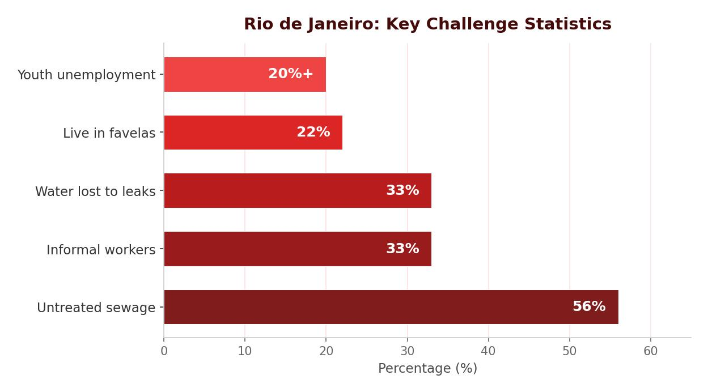

Social Challenges in Rio
When people migrate to Rio looking for a better life, many end up living in favelas — areas of poor-quality housing built illegally on the steep hills around the city. One of the largest is Complexo do Alemão, one of the biggest squatter settlements in South America. Favelas lack basic services, and the sheer volume of migration makes these problems worse.
Lack of Clean Water and Sanitation
Due to illegal tapping and leaks, one-third of Rio’s fresh piped water is lost before it reaches homes. Many favela residents have no water pipes at all and rely on wells, which can be polluted with sewage. A large percentage of residents lack access to flush toilets and instead use pit latrines. Sewage drains into the soil, open drains and rivers. An estimated 200 tonnes of raw sewage pour into Guanabara Bay every day.
Health and Energy
In densely packed favelas, diseases spread easily. Infant mortality rates can be as high as 50 per 1,000, and life expectancy as low as 45 years. Only 55% of the population has access to a local clinic. Power cuts are common because electricity supplies are overloaded, and illegal tapping of power lines causes shortages and fires.
One-third of Rio’s piped water is lost to leaks and illegal tapping. Infant mortality in favelas can reach 50 per 1,000, and life expectancy can be as low as 45 years.

Education and Unemployment
Education is compulsory for ages 6–14, but only 50% of children continue after 14. Many leave school early to earn money for their families. School attendance is low due to a lack of schools and teachers, overcrowded classrooms and the long distances children must travel. Violence can also prevent children from safely getting to school.
Unemployment rates in favelas exceed 20%. Around one-third of workers in Rio are in the informal sector, earning around £60 a month in dangerous, unregulated jobs like car washing and street vending. Without paying taxes, informal workers receive no insurance or unemployment benefits.
Crime
Crime is a major problem in Rio. Drug trafficking, theft and vandalism are widespread challenges. Criminal gangs operate openly in favelas, patrolling streets with guns and trading drugs. Murder rates are high — around 20 per 1,000 — and many residents feel unsafe in their own homes. The lack of education and formal work drives many young people into gang crime, where they are exploited for quick, easy money.
There is a clear link between the three challenges. Because education is limited, many young people cannot get formal work. Without stable income, some turn to drug and gang crime as an easy way to earn money. Gang members exploit young people who have dropped out of school, drawing them into a cycle of crime that is very hard to escape. The favelas are unregulated, so gangs operate with little opposition.
Environmental Challenges in Rio
Traffic Congestion and Air Pollution
Rio’s steep slopes and mountains make road building difficult and expensive. There has been a 40% rise in the number of cars in the last decade, and high crime levels mean many people prefer to drive rather than use public transport. The resulting traffic congestion produces a brown smog that covers the city, as vehicle exhaust fumes mix with Atlantic mist and factory pollutants. Air pollution is estimated to cause 5,000 deaths in Rio every year.
Waste Disposal
Rio generates 3.1 million tonnes of waste each year, mostly sent to landfills. In favelas, the narrow, steep streets prevent refuse vehicles from collecting rubbish. Waste is simply dumped, polluting water systems, causing diseases like cholera and attracting rats.
Water Pollution
Guanabara Bay is heavily polluted. Many of the 55 rivers flowing into the bay carry sewage and industrial run-off. Ships dump fuel into the bay. This pollution threatens wildlife, reduces fish populations and could damage tourism at famous beaches like Copacabana and Ipanema.
Air pollution causes an estimated 5,000 deaths per year in Rio. Guanabara Bay receives 200 tonnes of raw sewage daily, and 55 rivers flowing into it are polluted.